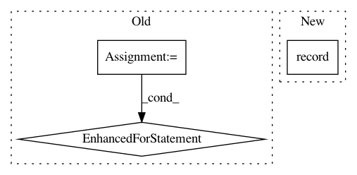

e09e6dc678f9b9c198ed361eea0dffa7749bc553,src/garage/torch/algos/vpg.py,VPG,train_once,#VPG#Any#Any#,130
Before Change
if self._minibatch_size else len(rewards_flat))
for epoch in range(self._max_optimization_epochs):
shuffled_ids = np.random.permutation(len(rewards_flat))
for start in range(0, len(rewards_flat), step_size):
ids = shuffled_ids[start:start + step_size]
loss = self._train(obs_flat[ids], actions_flat[ids],
rewards_flat[ids], advantages_flat[ids])
logger.log("Mini epoch: {} | Loss: {}".format(epoch, loss))
self._value_function.fit(paths)
After Change
with tabular.prefix(self._value_function.name):
tabular.record("/LossBefore", vf_loss_before.item())
tabular.record("/LossAfter", vf_loss_after.item())
tabular.record("/dLoss",
vf_loss_before.item() - vf_loss_after.item())
self._old_policy.load_state_dict(self.policy.state_dict())
In pattern: SUPERPATTERN
Frequency: 3
Non-data size: 3
Instances
Project Name: rlworkgroup/garage
Commit Name: e09e6dc678f9b9c198ed361eea0dffa7749bc553
Time: 2020-05-01
Author: 43084978+yonghyuc@users.noreply.github.com
File Name: src/garage/torch/algos/vpg.py
Class Name: VPG
Method Name: train_once
Project Name: IBM/adversarial-robustness-toolbox
Commit Name: 8acacf7ecdddd031366f2c044bdc6ce5ba8e5a62
Time: 2018-10-04
Author: Maria-Irina.Nicolae@ibm.com
File Name: art/classifiers/mxnet.py
Class Name: MXTextClassifier
Method Name: predict_from_embedding
Project Name: dnouri/skorch
Commit Name: a5f83e8f1e29c62070333d6ce48009e2fdb323b9
Time: 2017-07-19
Author: benjamin.bossan@ottogroup.com
File Name: inferno/callbacks.py
Class Name: AverageLoss
Method Name: on_epoch_end